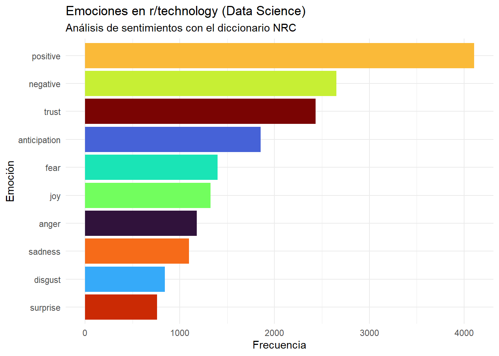
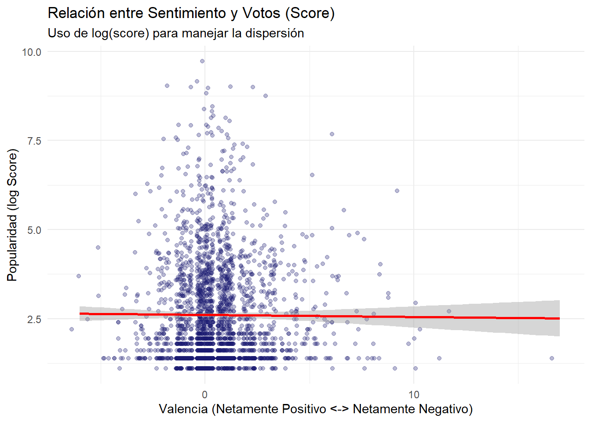
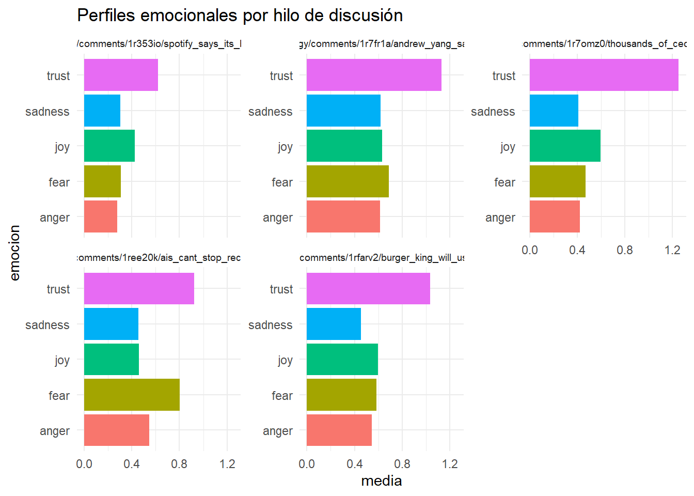
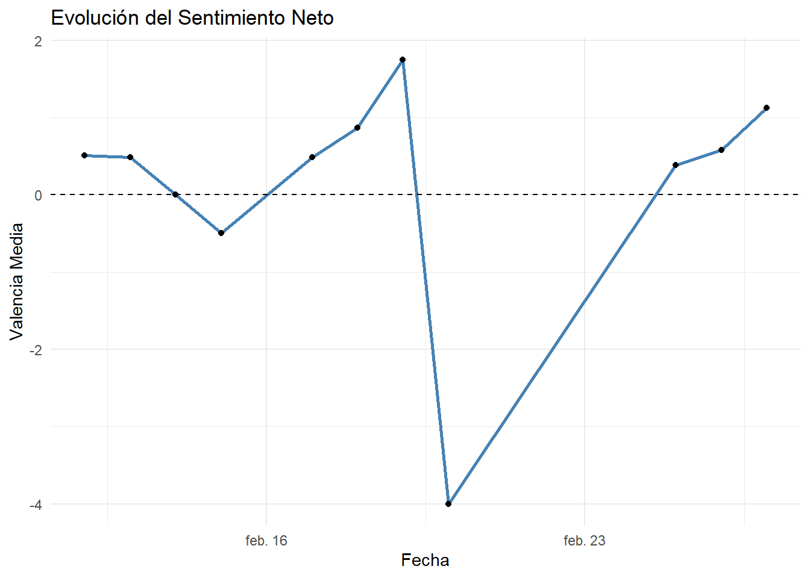

library(tidyverse)
library(syuzhet) # analisis sentimiento
textos_sentimiento <- readRDS("data/textos_sentimiento.rds")
data_texto <- readRDS("data/data_texto.rds")3 sentimientos
sentimientos <- get_nrc_sentiment(textos_sentimiento$texto_sentimiento, language = "english")
# Agrupamos los resultados para ver el total del debate
totales_sentimiento <- data.frame(
emocion = names(sentimientos),
valor = colSums(sentimientos)
)# Creamos un gráfico de barras limpio y claro
grafico_sentimientos <- ggplot(totales_sentimiento, aes(x = reorder(emocion, valor), y = valor, fill = emocion)) +
geom_col(show.legend = FALSE) +
coord_flip() + # Barras horizontales para que se lean bien los nombres
scale_fill_viridis_d(option = "turbo") +
theme_minimal() +
labs(
title = "Emociones en r/technology (Data Science)",
subtitle = "Análisis de sentimientos con el diccionario NRC",
x = "Emoción",
y = "Frecuencia"
)
# Mostramos el gráfico
print(grafico_sentimientos)
# 1. Unimos las columnas de sentimiento con el dataframe original
# Asumiendo que 'textos_sentimiento' es tu dataframe limpio
data_con_sentimiento <- cbind(data_texto, sentimientos)
# 2. Calculamos una métrica de "Valencia" (Positivo - Negativo)
data_con_sentimiento <- data_con_sentimiento %>%
mutate(valencia = positive - negative)
# 3. Gráfico de dispersión: Valencia vs Score
ggplot(data_con_sentimiento, aes(x = valencia, y = log1p(score))) +
geom_jitter(alpha = 0.3, color = "midnightblue") +
geom_smooth(method = "lm", color = "red") +
theme_minimal() +
labs(title = "Relación entre Sentimiento y Votos (Score)",
subtitle = "Uso de log(score) para manejar la dispersión",
x = "Valencia (Netamente Positivo <-> Netamente Negativo)",
y = "Popularidad (log Score)")
# Agrupamos por título de hilo (usando la URL o título corto)
comparativa_hilos <- data_con_sentimiento %>%
group_by(url) %>% # O el nombre corto que creamos antes
summarise(across(c(trust, fear, joy, sadness, anger), mean)) %>%
pivot_longer(cols = -url, names_to = "emocion", values_to = "media")
ggplot(comparativa_hilos, aes(x = media, y = emocion, fill = emocion)) +
geom_col() +
facet_wrap(~url, scales = "free_y", labeller = label_wrap_gen(width = 40)) +
theme_minimal() +
theme(legend.position = "none", strip.text = element_text(size = 7)) +
labs(title = "Perfiles emocionales por hilo de discusión")
# Necesitas que la columna date_utc esté en formato Date
data_con_sentimiento %>%
mutate(fecha = as.Date(date)) %>%
group_by(fecha) %>%
summarise(sentimiento_medio = mean(valencia)) %>%
ggplot(aes(x = fecha, y = sentimiento_medio)) +
geom_line(color = "steelblue", size = 1) +
geom_point() +
geom_hline(yintercept = 0, linetype = "dashed") +
theme_minimal() +
labs(title = "Evolución del Sentimiento Neto",
y = "Valencia Media",
x = "Fecha")